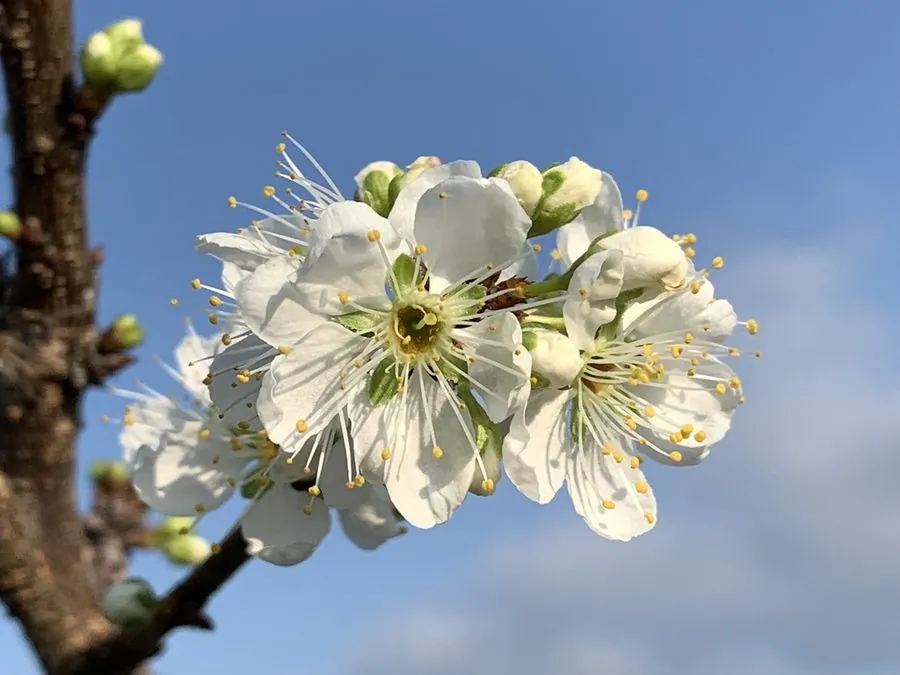

农作物与经济植物 · 植物界
李 Prunus salicina

李是蔷薇科落叶果树，果实圆润、酸甜多汁，可鲜食或加工蜜饯，中国李栽培历史悠久，品种繁多，是夏季常见水果之一。
- 分类
- 门被子植物门纲双子叶植物纲目蔷薇目科蔷薇科属李属
- 栖息环境
- 温带丘陵与平原，喜光耐旱，适宜排水良好的沙壤土
- 地理分布
- 原产中国，现栽培于东亚、欧洲、美洲与大洋洲
- 保护级别
- 暂无评估（栽培作物）
物种志
李是蔷薇科落叶小乔木，株高 3–6 m，树皮灰褐色，小枝红褐色，树冠开张。叶片椭圆或倒卵形，边缘有细锯齿。花白色，常三朵并生，先于叶开放，早春满树雪白。果实为核果，圆形或心形，果皮有黄、红、紫等色，表面常被果粉，果肉淡黄或红色，汁多味酸甜，核面有皱纹。
李原产中国，栽培历史超过三千年，《诗经》中已有记载。中国李适应性广，从华北到西南均有栽培，日本、韩国和欧美也有引种。它喜光、耐寒耐旱，但花期怕霜冻，适宜在排水良好的沙壤土生长。果实不耐贮运，多就近鲜销或加工成蜜饯、果酱、果酒。李花洁白繁密，也是春季观花树种，按果皮颜色还可分为黄李、红李和紫李等。
形态与习性
- 株高3–6 m，落叶小乔木
- 花白色，先叶开放
- 果实核果，果皮有果粉
- 成熟期夏季
- 用途鲜食、蜜饯与果酱
- 栽培历史中国栽培逾三千年
趣味知识
- 中国李的栽培历史可追溯到《诗经》时代。
- 李花先于叶开放，是早春重要的蜜源和观花树种。
- 李子表面那层白粉是天然果蜡，可减少水分蒸发。